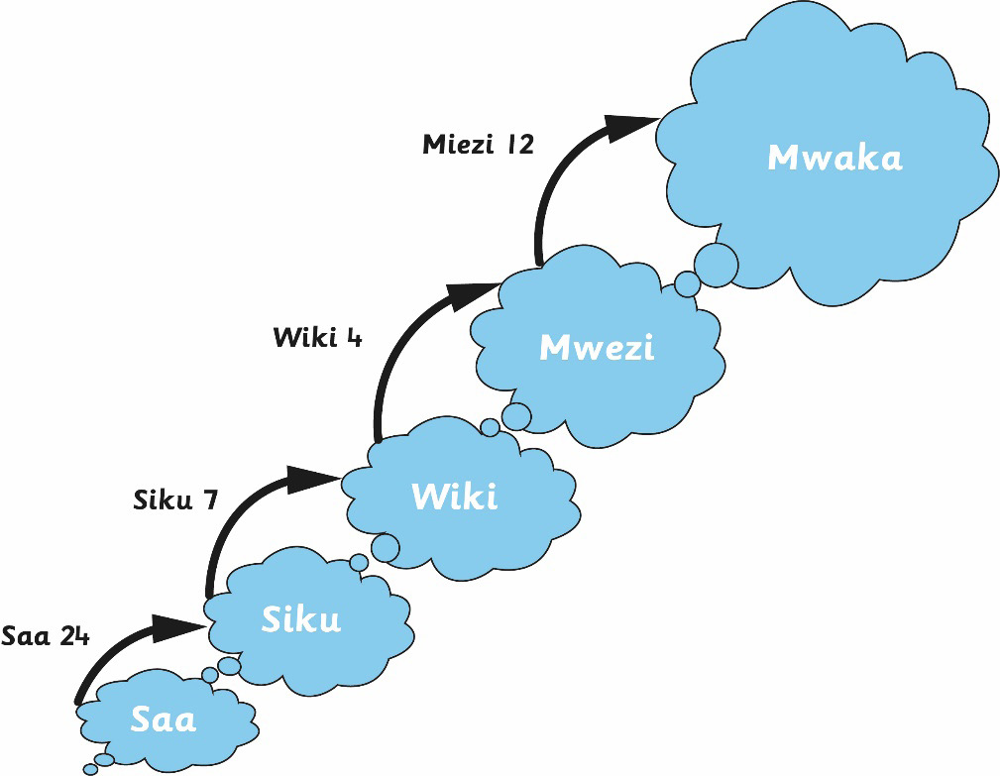
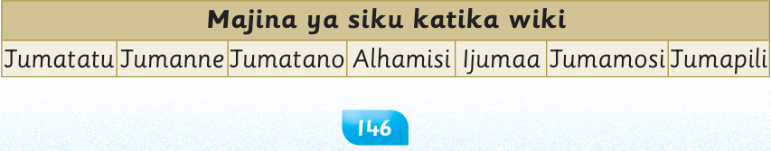

Uhusiano katika muda
Mchoro huu unaonesha uhusiano wa siku katika wiki, wiki katika mwezi na miezi katika mwaka.

Kumbuka kuwa muda hupimwa kwa siku, wiki, mwezi au mwaka.
(a)
Siku moja ina saa 24.
(b)
Wiki moja ina siku 7.
(c)
Mwezi mmoja una wiki 4.
(d)
Mwezi mmoja una siku 28, 29, 30 au 31.
(e)
Mwaka mmoja una miezi 12.
Majina ya siku katika wiki
Wiki moja ina siku saba. Majina ya siku hizo ni kama yanavyoonekana katika jedwali lifuatalo.
